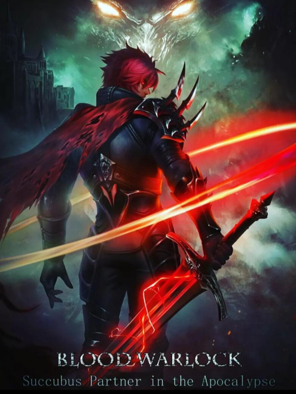
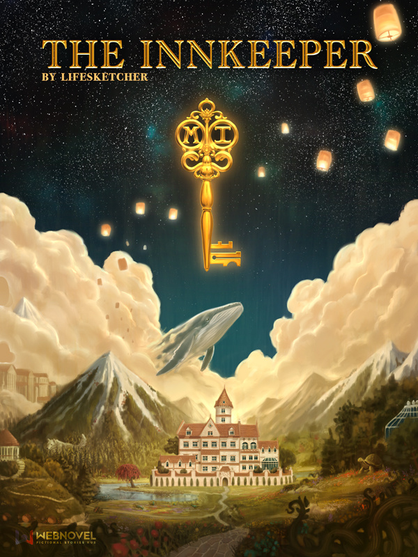
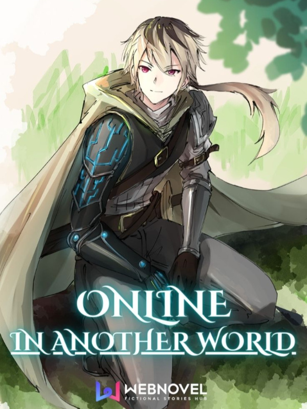
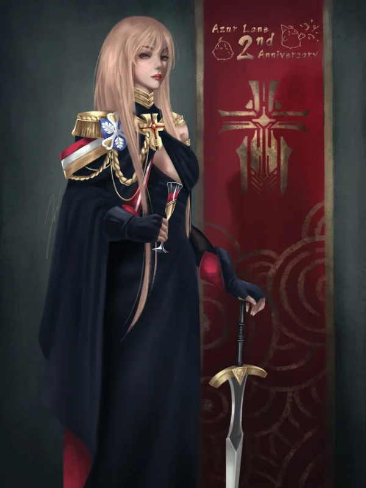
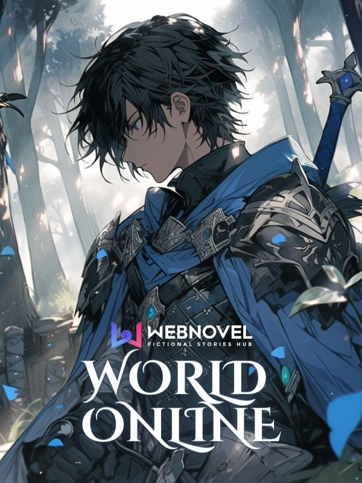
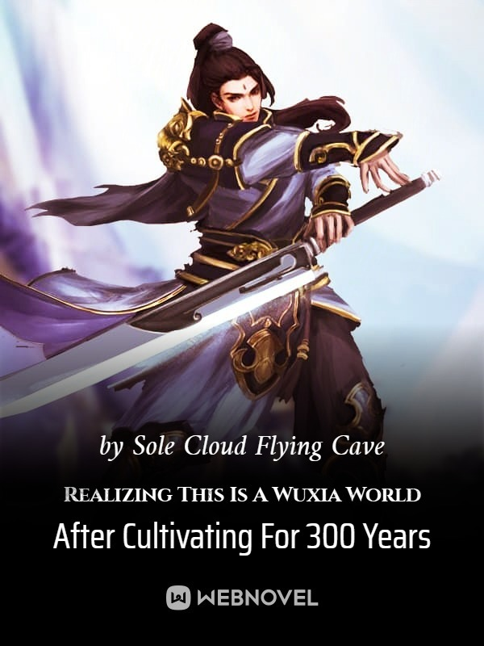
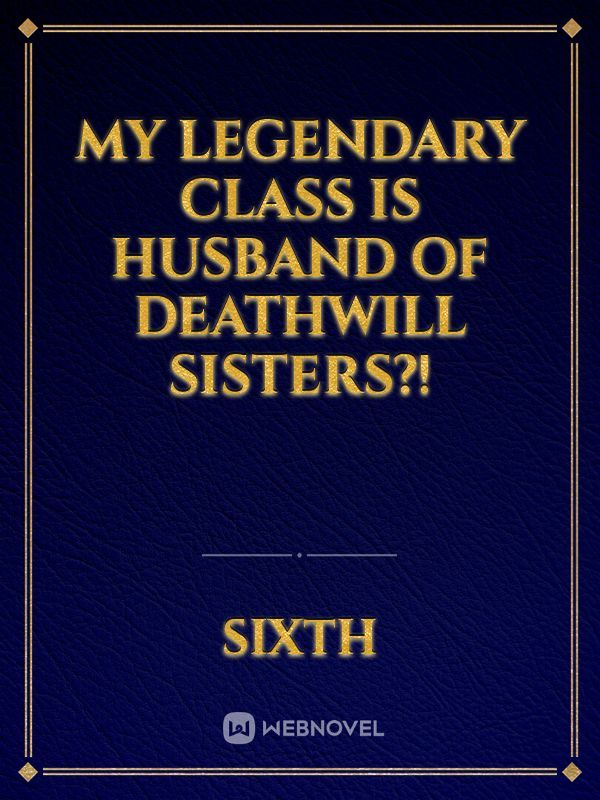
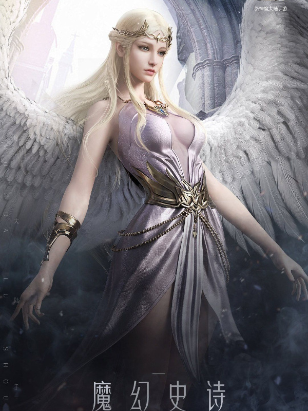
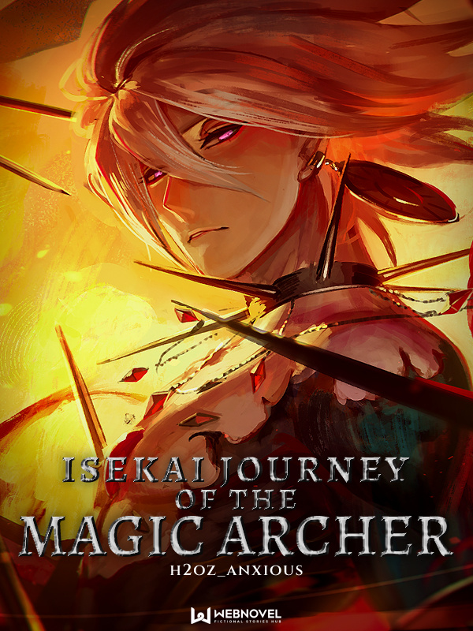
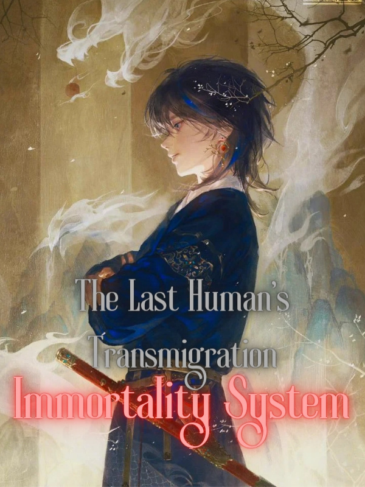

Library
Blood Warlock: Succubus Partner in the Apocalypse
The legendary mana finally reached planet Earth, causing all living things to officially enter the path of evolution.
Animals turned into terrifying beasts, some plants gained self-awareness, and humans who managed to withstand the wave of mana awakened the ability to acquire skills by defeating powerful enemies.
The entire planet entered a new era where the old laws fell. The only law was the law of the jungle where the strongest devoured the weakest.
Bai Zemin, an apparently normal college student, turned out to be an unparalleled genius in the path of magic. This caught the attention of a beautiful demoness who would become his partner in this journey to the absolute top.
God, Angel, Demon, Dragon, Vampire, Werewolf; no existence will be worthy of being his enemy!
Disclaimer: The 'Earth' in this novel is not the same Earth we are currently living on so do not use our common sense for this novel. This is pure fantasy, after all.

The Innkeeper
In the depths of a newborn universe, a cultivator takes advantage of the abundant energy to refine himself a treasure.
But after 14 billion years of refining and quite a few more to go,
he decides to entertain himself by releasing countless systems and watching how the creatures of this fledgling universe handle them.
On Earth, a young man, lost and confused about what to do with his life,
sits in a park and looks up at the night sky. A shooting star, a wish and a bang.
When the boy finally wakes up he hears a sound, "assimilation complete. Launching System.
Welcome to the Midnight Inn. Host Designation: The Innkeeper."

Online In Another World
In this world, there are those that are fortunate and those who are not.
Ethan Bellrose is neither; he is cursed. At nineteen, he has lived his entire life sheltered in his home as his fragile body blisters under sunlight, breaks under the slightest impact, and falls to any sickness.
However, the arrival of a world-changing digital service catches the hopeless young man’s eye: “Reincarnation Online”--a virtual reality experience that gives a new fantastical life to those who are unfulfilled with their current path.
For Ethan Bellrose, the choice is simple. Without hesitation, he orders the virtual reality headgear, choosing to abandon his current life and live forevermore in the world of fantasy, magic, and endless adventure–”Arcadius.”
Though what he finds is a world not full of leisure and trivial triumph, but a world just as alive and full of darkness, glory, and grandeur as Earth–if not greater.
Starting from square one as an infant, given a new name and family, this is the eventful life, full of dreadful lows and exhilarating highs, of “Emilio Dragonheart.”

Reincarnated as an Imperial Prince
A scientific genius named Thomas Harrier was transmigrated to an imperial prince body after a car accident that took his life. He found out that he is in a world similar to our own with a timeline akin to early twentieth century. The body that he is occupying was the imperial prince of a failing empire who suddenly rose to power after a successful assassination attempt of his father. Unaware that the attack is just the beginning of what is to come. He faces many challenges throughout. Will Thomas Harrier be able to live his second life in peace while running an empire and getting it back to its former glory? Or will he succumb into a conspiracy lurking within the country's borders?

World Online
It was the year 2169. The apocalypse finally arrived.
Global warming, zombies, nuclear war, all at once. Just one tipping point and the world itself would crumble.
Then, Nova Corp, a hegemon of the corporate world, seemingly convinced the global super powers into doing the impossible: Taking everyone online.
And they did. Everyone, poor or rich, was taken into the VRMMORPG: World Online.
A fantasy world where anything was possible. A utopia, unlike everything that the real world was.
But what was supposed to become a method of existence, became a battleground for supremacy. Companies, world powers, and the rich battled to become the greatest.
The disparity between the poor and the rich grew. There was no justice in this world. It took Darwin's words further than any other.
Jake, as poor as one could get, was caught in the rift, torn apart by the unfair system.
He was a dog of the Shadow King Guild, and even though he was absolutely loyal, in the end, the guild cut him off.
He was without an anchor and left in the cruel world. He knew no Utopia like the others.
But one day, when he opened his eyes, nothing was the same anymore.
Opening his eyes, he found himself ten years in the past. He was done being the henchman now. He was not going to let himself be used anymore.
Now, it was time for him to fight back. So what if the strongest were going to stand in his way? He was going to be unstoppable.

Realizing This Is A Wuxia World After Cultivating For 300 Years
Cui Heng was transmigrated to another world and the system told him that the new world he was in was a high-grade Xianxia world.
It was a world where Celestial Kings soared the sky and terrifying monsters ruled the lands. The strong would destroy a planet if their mood was bad and Cui Heng trembled in fear when he learned of how scary the new world was.
Thankfully, the system had granted him the protection that last for 300 years. As long as he remained in the safety zone, he would not receive any damage.
With his safety secured, he began his cultivation training for the next 300 years.
Throughout the years as he trained, some people entered his safety zone by mistake.
There was a peasant who was once a monk and a beggar. Despite that, he still had the dream of bringing peace to the land and saving the lives of millions.
There was a noble who was once called the once-in-a-million-year genius. Yet, luck wasn't at his side and his talent fell and was laughed at by others for years.
There was a princess whose only wish was to find her older brother. She could've become a celestial but decided to remain in the human realm to wait for her brother's return.
There was a weak lady who was plagued with illness from birth but had the goal of adventuring and helping the poor and weak.
...
Cui Heng befriended these people and even gave them a few pointers before they left.
300 years later, when the protection period had ended, he had finally mastered the Golden Core. Even then, he was still reluctant to go to the outside world.
But when he did, he realized that the world was merely a world of Wuxia.

My legendary class is Husband Of Deathwill Sisters?!
His legendary class is The Husband Of Deathwill Sisters!
While other players went through common quests to get their classes, Alex started by getting a legendary class: Husband Of Deathwill Sisters! He got three beautiful wives from the start and the legendary castle!
What would his girlfriend and friends say about this once he reveals his class to them?
And what about Deathwill Sisters? What is their plight, and why would they suddenly get a husband?

Reincarnated As The Strongest Ancestor With a System
Reincarnating into another world without having to start from the bottom was certainly a good thing.
However, what if the first place you appear is inside a coffin?
This is what Qin Yuan experienced.
While he had boundless strength, he was already at the end of his age so he had to seal his body.
The only thing he could do was to leave with a Spiritual Body whose strength was extremely limited.
The good thing is that there is a system that suddenly appears.
Ding
[Collect Karma Points.]
[You can buy anything with Karma Points.]
[Use 100 Karma Points to purchase a one week life extension.]

Isekai Journey Of The Magic Archer
Disclaimer: This novel is a cliché
Suggestion: If you like (Slice Of Life) with wonderful parents and survival, this is for you.
***
Like every (Isekai) protagonist, I got reincarnated after getting hit by a hyper-speed truck.
That was an empty and dark life anyway, so I was already looking forward to a decent, unknown afterlife.
But... the world had a unique thing in mind.
In this new world, I had parents, amazing ones at that.
My father was a talented mage, and my lovely mother was a sharp and cunning merchant.
Ignoring all of my weirdness, they loved me unconditionally.
This was the life that anyone would love.
Eating and cooking delicious food, practicing archery and magic, and playing with my parents.
Everything was wonderful until... those demons separated us and it left me in a ferocious forbidden forest, just to be eaten alive by beasts.
But dying wasn't even a question.
I will go back… to them.

Immortality System: The Last Human's Transmigration
[You have died]
[Initiating System Activation...]
Those were the words that rang in my ears the moment my vision had turned black. But unlike others who were thrown into the same situation as me, I didn’t die.
[Immortality System has been activated]
I was thrown 300 million years back in time to an era where the weak were preyed on, and the strong ruled with iron fists. An era of magical creatures beyond human understanding. An era of intelligent creatures that could rule over humanity with the power of their stare alone, and ones who could dissipate a hurricane with the snap of their fingers.
An era with magic and evolution that would allow me to climb to the top…
Thrown into the wild with no one to rely on, I was forced to turn towards the only semblance of hope in this cruel and uncaring world. The only thing that could help me survive this madness.
The light at the end of the tunnel for the last human who persisted until the end.
The only system worthy for the last survivor, and humanity's final anchor.
